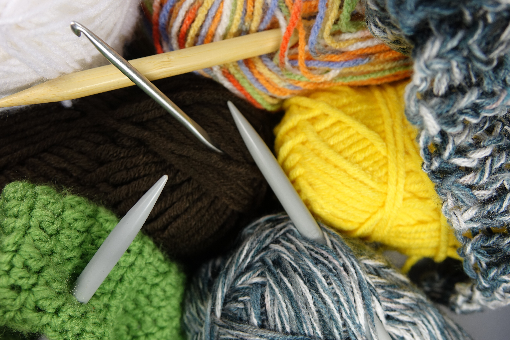
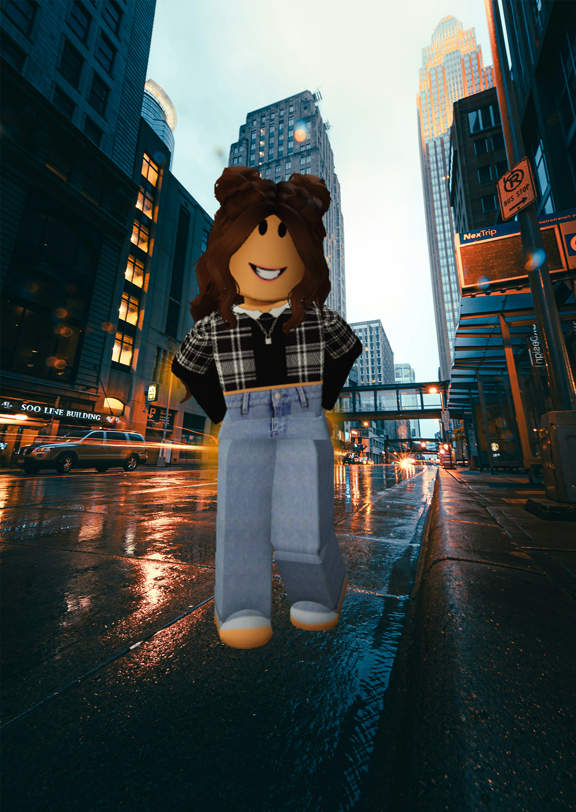
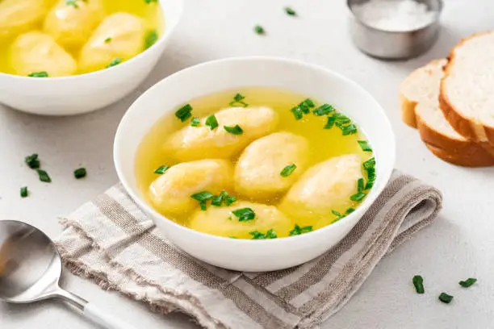
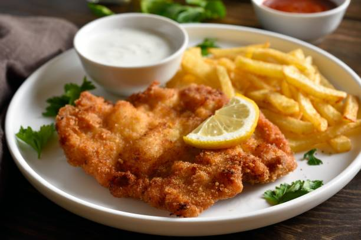
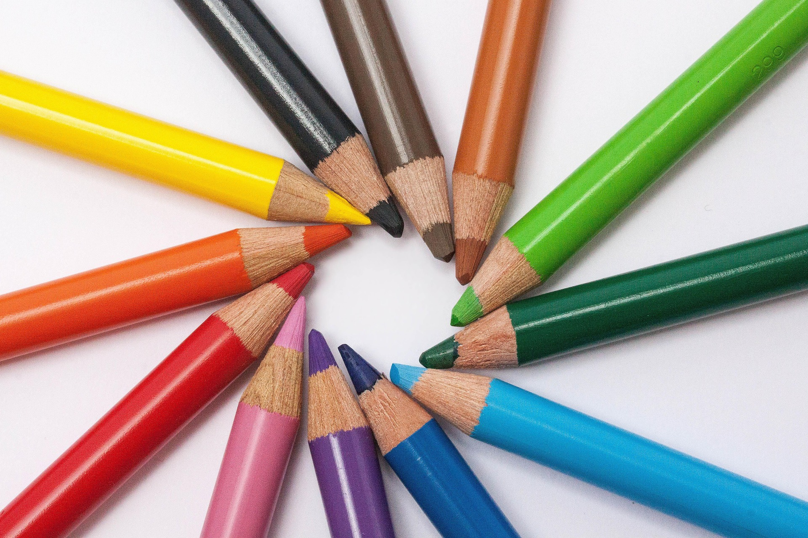

Crocheting & Knitting

I love crocheting amigurimi. I have only knitted a few cloths and a set of hand warmers so far.
This is my Playlist for good days!
Have a great day!
Singing & Dancing
I love singing popular songs. I have a whole YouTube playlist where I have songs I sing. I also like playing Just Dance or making my own choreographies to any songs.
I speak...
English

I have learned English ever since I was 2 years old. From there, I pursued school education in English and an additional after-school course until Middle School. In middle school, I started reading and watching things in English until I moved to the US to start high school. Since then, I have grown to be fluent in English.
I sprich...
German

I was born in Austria, so austrian's german is my "original" language. I was never very good at writing in German, but ever since I moved to the US, this deficit has gotten stronger and also appears when I speak German. I always make up new words or use English grammar when speaking German. #Bilungual_Stuffy
Jag talar...
Swedish

After watching the Netflix Series "Young Royals", I noticed how close german and swedish actually are. That sparked my passion for the language. I did not actively try to learn the language until 2026, when I added a series of Swedish learning videos to my daily to-do list in addition to doing Duolingo.
"I can only take so much!"
- Cristina Perri's "Human"

"IF YOU
Believe
IN YOURSELF
Anything
IS POSSIBLE
-Miley Cyrus
My favorite animal is a...
Cats are cute little devils that love to cuddle. They are always there when you need something. They comfort me the most, which is why I love them.
Lea
My spirit animal is a...
The red panda spirit animal symbolizes gentleness, independence, peaceful solitude, and emotional balance. It serves as a guide to navigate life's challenges with quiet patience and resilience, while reminding you to value restorative rest and playful joy.
"DON'T
QUIT"
QU
When the road you're trudging seems all uphill,
When the funds are low and the debts are high,
And you want to smile but you have to sigh,
When care is pressing you down a bit - rest if you must, but don't you quit.
Life is queer with its twists and turns.
As everyone of us sometimes learns.
And many a fellow turns about when he might have won had he stuck it out.
Don't give up though the pace seems slow - you may succeed with another blow.
Often the goal is nearer than it seems to a faint and faltering man;
Often the struggler has given up when he might have captured the victor's cup;
And he learned too late when the night came down,
How close he was to the golden crown.
Success is failure turned inside out - the silver tint of the clouds of doubt,
And when you never can tell how close you are,
It may be near when it seems afar;
So stick to the fight when you're hardest hit - it's when things seem worst; you must not quit.
"NEVER STOP
LEARNING,
BECAUSE LIFE
NEVER STOPS
TEACHING."
Wide spread quote
This to me means that I will always continue to learn, even when I achieve my career goal, since there is alays something to learn. No Human can ever know everything, but I want to try to come as close to knowing everything as I can because the more knowledge I have means the more I can help someone else.
My favorite apetizer is...

Grießnockerlsuppe
This apetizer consists of beef broth, semolina dumplings, and chives, and is classified as a clear soup.
My favorite éntré is...

Schnitzel
This enter is a type of schnitzel made of a thin, breaded, pan-fried veal cutlet. THE ONLY CORRECT WIENER SCHNITZEL ON EARTH!!!
My favorite dessert is...
Kaiserschmarn
This dessert is a lightly sweetened pancake that takes its name from the Austrian emperor Franz Joseph I, who was fond of this fluffy shredded pancake. It is served as a dessert or as a light lunch.
Writing a novel
Love Doesn't Have A Border -Lea F.
My novel is a love story between a 17 year old girl, who is in 10th grade and is studying medicine part time through a special program, and her 23 year old Physics/Maths teacher, who is in the middle of finishing off his Masters Degree. This love story might seem disgusting, but following them will help you notice that this is about more than love. Follow Lea and Martin as they uncover each other's mysteries, learn what it truly means to be there for one another, and learn how to cope with the illegality of their relationship because Love Doesn't Have A Border
Why do I code?
I code because...
♥ I like having a hobby where I can create unique and personal things
♥ There is always something new to learn
♥ It is something that noone in my family knows how to do
♥ I just love coding ever since my AP CSP Course
Designing
